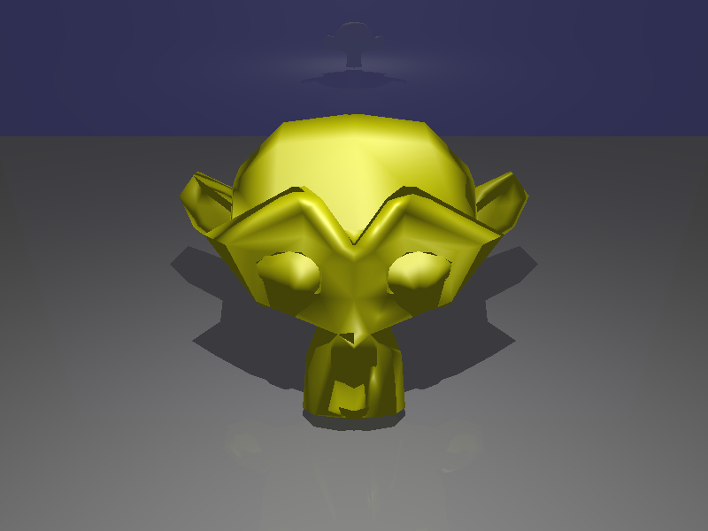
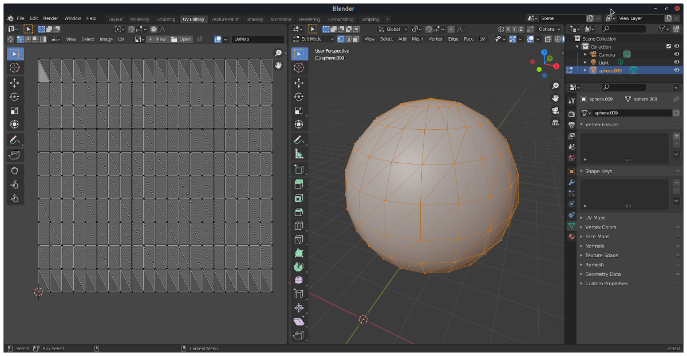
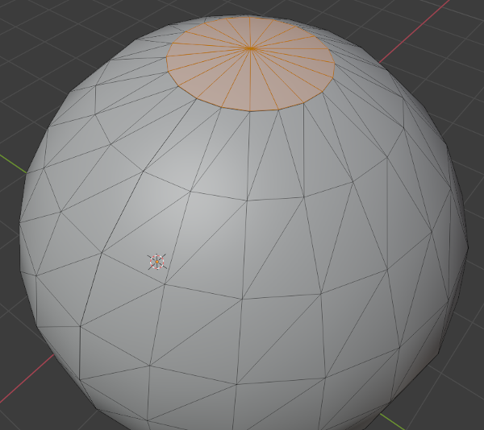
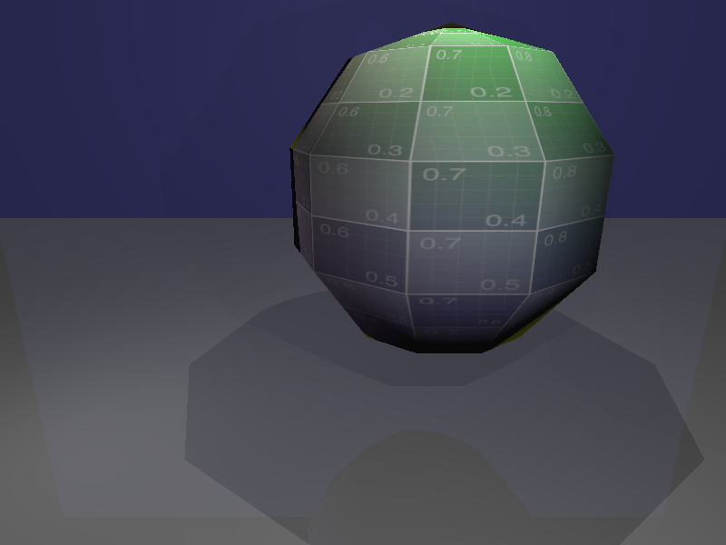
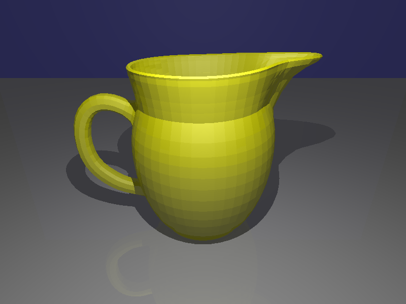
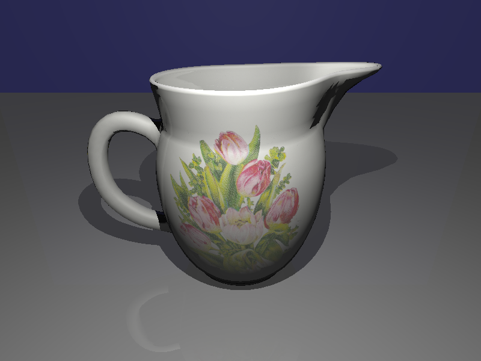
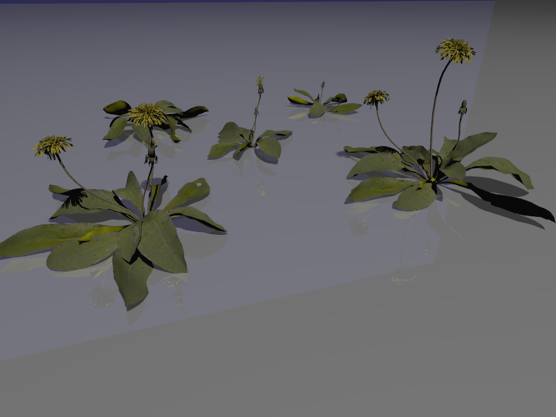

C++ Ray Tracer
Part 1: Antialiasing
Implementation Updates:
- Modified main.cc in src/rtbasic to incorporate the -a command-line argument for defining the number of samples per pixel.
- Introduced
RayTracer::SetNumSamplesPerPixel()and necessary data members to control the samples per pixel for antialiasing. - Altered
RayTracer::Render()to generate multiple random rays through each pixel for antialiasing, enhancing image quality.
Part 2: TriMesh

TriMesh Functionality:
Implemented TriMesh functionalities (Hit, RayFaceHit, Save, Load, GetBoundingBox, ComputeFaceNormals, ComputeVertexNormals) in trimesh.cc.
Enhanced scene parser (raytra_parser.cc) to load triangle meshes using the w command.
Generated and verified rendering for sphere_mesh.scn and suzanne.scn.
Mesh Generation:
- Implemented
BuildWatertightSphere()andBuildSphereWithTexCoords()inmain.ccofmesh_gen. BuildSphereWithTexCoords()generates a non-watertight sphere mesh with vertex texture coordinates mapped from spherical coordinates. BuildWatertightSphere()creates a watertight sphere mesh without boundary vertices, edges, or faces. 
Part 3: Texture Mapping
FaceGeoUV Class:
- Implemented
FaceGeoUVinface_geouv.handface_geouv.cc, along with necessary modifications inHitRecordandSurface::Hit()functions for different surface types.
Texture Handling:
- Implemented
ImageTexture::Value()inimage_texture.ccto evaluate textures at specific locations. - Modified
PhongMaterialto support diffuse textures, allowing evaluation of textures at hit points.
Scene File Parser Update:

- Updated the scene file parser to support textured Phong materials using image textures.
Part 4: Bounding Volume Hierarchy (BVH)
BVHNode Implementation:

- Completed BVHNode::BuildBVH() and BVHNode::Hit() functionalities in bvh_node.cc.
Introduced a scene-level BVH in main.cc of rtbasic for efficient rendering.
Mesh-level BVH:

- Implemented TriMesh::BuildBVH() to construct a BVH of mesh triangle faces for optimized intersection tests.
- Created a new BVHTriMeshFace class to represent individual TriMesh faces for BVH construction.
Final Renders:

Rendered scenes such as jug_triangle_soup.scn, sphere_mesh_textured.scn, jug.scn, and dandelion.scn to demonstrate improved rendering with added functionalities.
The assignment includes significant enhancements to ray tracing capabilities, mesh handling, texture mapping, and BVH implementation. The additions allow for improved image quality, efficient mesh representation, and texture-driven material definitions in scene rendering.